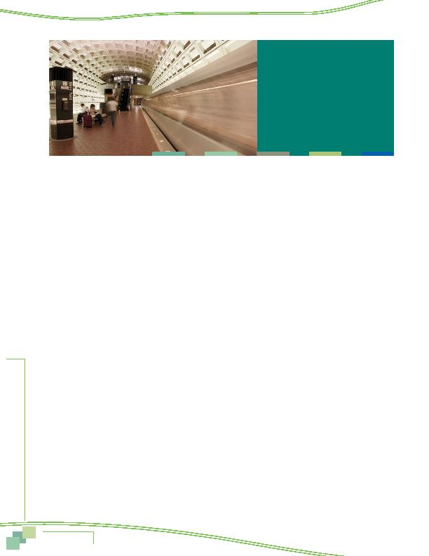

|

on e Comm stress (17%) and using travel time productively (17%). concerns. Fifteen percent said commuters who use alternative modes help the environment, indicating recognition that use of alternative modes has an impact of environmental quality and suggesting that alternative mode users can take pleasure in contributing to cleaner air. Four percent noted reducing greenhouse gases and four percent said saving gas or energy, a benefit related to sustainability. of alternative modes could benefit society by reducing traffic congestion and 45% said it could reduce pollution or help the environment. One in ten (11%) cited reduced greenhouse gases and six percent noted that society could benefit because roads did not deteriorate as quickly, presumably reducing the cost to maintain or repair roads. Smaller percentages of respondents noted energy savings, reduced government costs, reducing road rage, and reducing accidents. a "4" or "5" on a 5-point scale, where "5" meant "very satisfied." But 16% rated their satisfaction as either a "1 not at all satisfied" or "2." ease of the commute. Three quarters (76%) of respondents who said they had an easier commute than last year and 71% who said their commute had not changed were satisfied with their commute, compared to only 36% who said their commute had become more difficult. lived and worked. Respondents who lived in the Inner Core were notably more satisfied with their commute than were respondents who lived in the Middle Ring or Outer Ring. But respondents who worked in the Outer Ring were more satisfied than were respondents who worked in the length increased. More than nine in ten commuters who had very short commutes 10 minutes or less gave a 4 or 5 rating for satisfaction. When the commute was 21 to 30 minutes, satisfaction dropped to 71%. Less than half of commuters who traveled 31 to 45 minutes were satisfied and when travel time exceeded 60 minutes, only 30% rated their commute a 4 or 5. satisfaction with transportation in the region. While about a quarter (27%) said they were not satisfied (rating of 1 or 2). vanpooled gave the lowest ratings for transportation satisfaction; only 35% were satisfied. Respondents who used transit or bike/walk for commuting gave higher satisfaction ratings. for transportation satisfaction than did respondents who lived farther away. Almost six in ten respondents who lived within easy walking distance of a train station were satisfied with transportation, compared with only four in ten or less respondents who lived one mile or more from a train station. and transportation satisfaction. Satisfaction declined as the length of the commute increased, from a high of 47% satisfaction for those who had a commute of 10 minutes or less, to 29% for respondents who traveled more than an hour to work. respondents focused primarily on ways to improve transit service, with particular emphasis on increasing transit availability and safety. Two in ten respondents proposed Metrorail expansions to more destinations and 17% wanted more bus and train service. Eight percent suggested that Metrorail safety be enhanced. said that use of alternative modes could benefit society by reducing traffic congestion and 45% said it could reduce pollution or help the environment. |